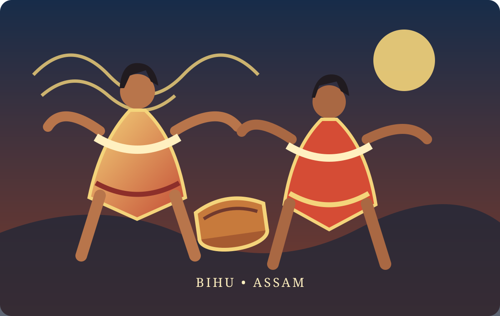

Explore all eleven languages
Tamil
Dravidian · Tamil script
AksharamalaLiteratureCultureSanskrit
Indo-Aryan (Classical) · Devanagari (also many historical scripts)
AksharamalaLiteratureCultureTelugu
Dravidian · Telugu script
AksharamalaLiteratureCultureKannada
Dravidian · Kannada script
AksharamalaLiteratureCultureMalayalam
Dravidian · Malayalam script
AksharamalaLiteratureCultureOdia
Indo-Aryan · Odia script
AksharamalaLiteratureCultureMarathi
Indo-Aryan · Devanagari (historically Modi script also used)
AksharamalaLiteratureCultureAssamese
Indo-Aryan · Eastern Nagari / Assamese script
AksharamalaLiteratureCultureBengali
Indo-Aryan · Eastern Nagari / Bengali script
AksharamalaLiteratureCulturePali
Middle Indo-Aryan · Historically written in several scripts; Devanagari is one modern convention
AksharamalaLiteratureCulturePrakrit
Middle Indo-Aryan · Multiple scripts across regions and periods; no single universal Prakrit alphabet
AksharamalaLiteratureCultureComparative research
Language similarities and connections
Dravidian relationships, Indo-Aryan history, language contact, loanwords, cognates and scripts.
11-language translator & analyser
A transparent research prototype for comparing curated vocabulary and linguistic evidence across all eleven.
Visual culture gallery
Each language page is being developed to include script specimens, manuscripts, literature, festivals, clothing, crafts and performance traditions. Image captions and rights information will accompany photographs; India in Pixels videos are credited as explanatory references, not treated as reusable image assets.
India in Pixels by Ashris ↗
Visual explainers on Indian languages, maps, cultural histories and linguistic patterns.
Bharatavani — CIIL ↗
Government of India language portal with dictionaries, learning resources, multimedia and classical-language material.
National Digital Library of India ↗
Discover learning and research resources across Indian languages.
Open-access research library
Start with specific digital collections and primary-text repositories. Free-to-read access does not automatically mean that every scan or edition may be republished; check the rights notice on each item.
CICT · Classical Tamil texts ↗
Central Institute of Classical Tamil: the classical text catalogue, with reading access to named works.
CICT · Free e-books ↗
Digital editions and downloadable books in the Pavendhar Library collection.
CICT · Palm-leaf manuscript archive ↗
Digitised manuscript bundles, text records and lexical research tools; item-level rights vary.
GRETIL · Sanskrit and Indic e-texts ↗
Searchable electronic texts for Sanskrit and other South Asian textual traditions.
SARIT · Sanskrit texts ↗
Searchable Sanskrit texts with scholarly metadata and editorial context.
SuttaCentral · Pali canon ↗
Free access to early Buddhist texts in Pali and parallel translations.
E-Piṭaka · Pali texts ↗
Search and read the Chaṭṭha Saṅgāyana edition of the Tipiṭaka with parallel translations.
Bharatavani · CIIL ↗
Institutional language portal with dictionaries, terminology and learning material across Indian languages.
National Digital Library of India ↗
Search books, learning resources and research records across languages and disciplines.
Shodhganga · Indian theses ↗
Open repository of doctoral theses from Indian universities, useful for language and literature research.
For Prakrit, begin with the Jain e-Text collection and inspect the individual text and copyright statement before reuse: Jain e-Text ↗. The collection is useful for reading and search, but its site states that copyright is reserved.
Manuscripts and scripts · credited visual collection

,_Languages_in_the_manuscript_Tamil_Telugu_Sanskrit,_Scripts_Grantha_Telugu_Tamil,_Hindu_Shaivism_monastery,_UVSL_589.jpg){kind=link}


Photographs are shown under their stated Creative Commons licences with author attribution. The gallery is a verified starting collection, not yet a complete regional photography set for all eleven languages.
Living textile traditions · visual gallery


Regional clothing is shown as a living tradition, not as a uniform costume for everyone in a language community. Images are credited under the licences recorded on Wikimedia Commons.
Festivals and living traditions · visual gallery





These photographs document distinct regional traditions; they are examples, not an exhaustive or exclusive festival map of any language community.